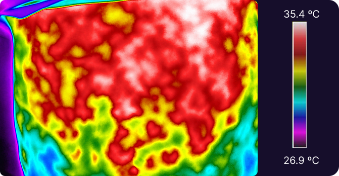

Base de dados de imagens para pesquisa e diagnóstico assistido por computador. Consulte as amostras e baixe os dados.

O SteatoDB é um conjunto de dados de imagens térmicas da região abdominal de pacientes com esteatose hepática e de indivíduos sem a doença. A base foi concebida para apoiar pesquisas nas áreas de visão computacional, aprendizado de máquina e processamento de imagens médicas, oferecendo material para a investigação de abordagens computacionais aplicadas à análise de imagens térmicas.
O conjunto de dados permite explorar técnicas de análise e extração de características, reconhecimento de padrões e classificação de imagens. Nesse contexto, sua utilização pode contribuir para estudos que investigam diferenças nos padrões térmicos entre os grupos avaliados, bem como para o desenvolvimento de métodos computacionais voltados à pesquisa em saúde.
O SteatoDB constitui, portanto, um recurso para pesquisadores e desenvolvedores interessados na aplicação de técnicas computacionais à análise de imagens térmicas. Sua disponibilidade pode favorecer a realização de estudos experimentais e a exploração de novas abordagens de visão computacional e aprendizado de máquina no contexto da investigação da esteatose hepática.
| Modalidade | Imagem térmica (infravermelho) |
|---|---|
| Câmera | Termógrafo com sensor infravermelho FLIR, modelo S650C |
| Resolução | 640 × 480 pixels |
| Pacientes | 70 (16 com MASLD e 54 não doentes) |
| Quantidade de imagens | 350 (80 de pacientes com MASLD e 270 de pacientes não doentes) |
| Imagens por paciente | 5, com intervalo de 20 segundos entre cada captura |
| Classes | 2 (MASLD e não doente) |
| Formato dos arquivos | .JPG |
| Aclimatação | 15 minutos em ambiente com 23 ºC e umidade relativa de 65% |
| Posicionamento | Decúbito dorsal, com a área abdominal desnuda; câmera acima do paciente, formando um ângulo de 90º |
| Diagnóstico de referência | Ultrassonografia da região abdominal superior ou total, realizada por especialista |
Clique em uma imagem para ampliar.
O SteatoDB foi desenvolvido para apoiar pesquisas sobre a detecção de esteatose hepática a partir de imagens térmicas, incluindo o desenvolvimento e a avaliação de métodos computacionais de classificação e análise de imagens. O conjunto de dados destina-se exclusivamente à pesquisa e não substitui exames clínicos, nem deve ser utilizado isoladamente para estabelecer diagnósticos ou orientar decisões clínicas sobre pacientes.
Antes de utilizar o conjunto de dados, é importante considerar suas características, incluindo o número de imagens e participantes e a distribuição entre as classes. Como cada participante possui cinco imagens, recomenda-se que a divisão entre os conjuntos de treinamento e teste seja realizada por participante, garantindo que imagens de uma mesma pessoa não estejam presentes em ambos os conjuntos e reduzindo o risco de vazamento de dados. Além disso, caso as imagens utilizem escalas de cores ajustadas individualmente, deve-se considerar que uma mesma cor pode corresponder a temperaturas diferentes em imagens distintas.
O uso do SteatoDB deve respeitar os princípios éticos aplicáveis à pesquisa científica, com atenção à privacidade, à confidencialidade e à proteção dos participantes. As imagens disponibilizadas devem ser utilizadas exclusivamente para as finalidades autorizadas, sendo proibidas quaisquer tentativas de identificação dos indivíduos retratados ou formas de utilização que comprometam sua privacidade. Os usuários também devem respeitar as condições de acesso e compartilhamento da base de dados, garantindo seu uso responsável em pesquisas e atividades acadêmicas.
Os arquivos do SteatoDB estão organizados em pastas, primeiro pela classe e depois pelo ano.
Para baixar o SteatoDB, responda ao formulário de acesso. O conjunto de dados destina-se exclusivamente à pesquisa; antes de utilizá-lo, leia as orientações de utilização e a seção de ética e privacidade desta página.
Responder Formulário para BaixarTrabalhos publicados com imagens desta base. O número de participantes varia entre eles porque a base foi sendo ampliada ao longo do tempo.
Pinto, D. M.; Souza, J. C.; Silva, A. C.; Martins Filho, H. M. A.; Paiva, A. C.; Zângaro, R. A. Classificação de esteatose hepática não alcoólica em imagens térmicas da região do fígado utilizando redes neurais convolucionais. Simpósio Brasileiro de Computação Aplicada à Saúde (SBCAS), 21., 2021, p. 302–312. SBC.
Base utilizada: 36 participantes (14 com DHGNA e 22 saudáveis), 223 imagens.
Silva, M. P.; Silva, A. C.; Paiva, A. C. Classification of non-alcoholic fatty liver disease in thermal images of the liver using a Siamese neural network. Brazilian Conference on Intelligent Systems (BRACIS), 2024, p. 260–269. Springer Nature Switzerland.
Base utilizada: 40 participantes (18 com NAFLD e 22 saudáveis), 235 imagens.
Farias, M. V. S.; Silva, I. F. S.; Silva, A. C.; Martins Filho, H. M. A.; Paiva, A. C.; Cunha, A. Method for detecting non-alcoholic fatty liver disease in abdominal thermography time series using temporal convolutional networks. Procedia Computer Science, v. 256, 2025, p. 756–763. doi.org/10.1016/j.procs.2025.02.176
Base utilizada: 29 participantes (8 com NAFLD e 21 saudáveis), 145 imagens.
Farias, M. V. S.; Silva, I. F. S.; Silva, A. C.; Martins Filho, H. M. A.; Paiva, A. C. Classificação de Doença Hepática Gordurosa Não Alcoólica em Imagens Térmicas usando Temporal Convolutional Networks.
Base utilizada: 245 imagens (113 com DHGNA e 132 saudáveis).
Oliveira, W. A. D.; Brito, F. R. C.; Pinto, D. M.; Silva, A. C.; Martins Filho, H. M. A. Classificação da Doença Hepática Esteatótica Associada à Disfunção Metabólica em Imagens Térmicas Utilizando Séries Temporais. Simpósio Brasileiro de Computação Aplicada à Saúde (SBCAS), 26., 2026, p. 265–276. SBC.
Base utilizada: 66 participantes (15 com MASLD e 51 saudáveis), 330 imagens.
Oliveira, W.; Brito, F.; Silva, A.; Pinto, D.; Silva, A.; Filho, H. Classification of Metabolic Dysfunction-Associated Steatotic Liver Disease Using a Thermal Heterogeneity Representation from Infrared Thermographic Images.
Base utilizada: 66 participantes (15 com MASLD e 51 saudáveis), 330 imagens.